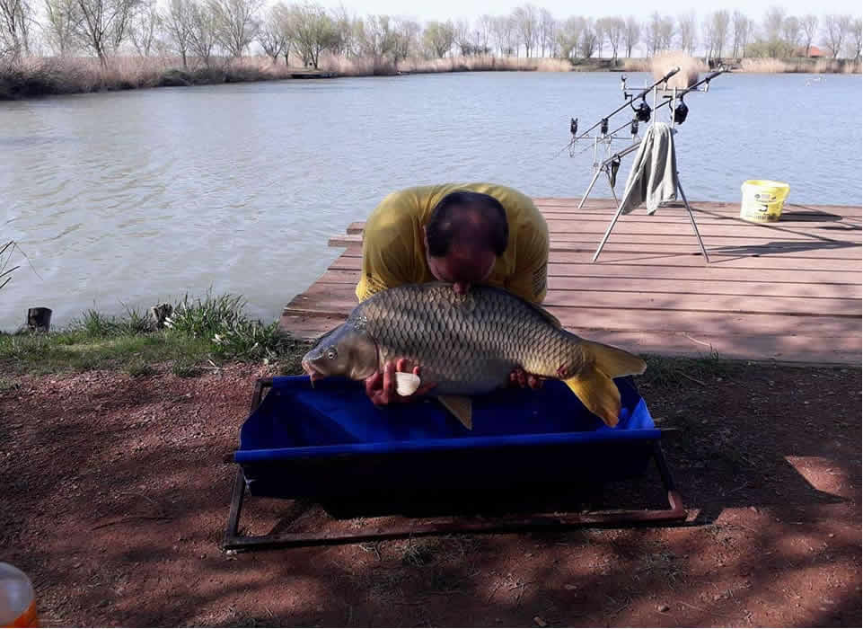

Jezera
Debeljačka jezera - Šaran organizovano se bave komercijalnim ribolovom od 2000. godine. Takmičenja se organizuju tokom cele godine, kako za iskusne ribolovce, tako i za početnike. Kompleks se sastoji od pet jezera od kojih je jedno uređeno po merilima takmičarskih voda. Ovo su veštačka jezera sa uređenim prilazima lovnim mestima. Na takmičenjima učestvuju ljubitelji ribolova iz zemlje i iz inostranstva. Poznata jezera namenjena za sportski ribolov su: jezero 3, jezero 3a i jezero 4.
Jezero 3: jezero je veličine 3 hektara i nepravilnog je oblika, sa deset pozicija sa po dva mesta za pecanje na svakoj poziciji. Pored šarana u jezeru se nalazi još i amur. Na ovom jezeru organizuje se pecanje na ove dve vrste riba. Primenjuje se sportski režim ribolova uhvati i pusti, a može se pecati i danju i noću. Na ovom jezeru organizuju se profesionalna šaranska takmičenja. Jezero je poribljeno sa krupnim šaranom i amurom. Obale jezera obrasle su trskom, dok su na svakoj poziciji za ribolov posađene vrbe koje prave hlad tokom sunčanih dana.
Jezero 3a: jezero je veličine 0.7 hektara i raspolaže sa trideset uređenih mesta za pecanje. Jezero opseduju pojasevi trske. Blizu jezera se nalazi restoran i parking prostor. Ribolovcima ovo jezero nudi babuške, šarane i amure. Za cenu dnevne dozvole moguće je odneti ograničenu količinu babuške koju ribolovac upeca, a šaran u težini od jednog do tri kilograma se plaća po cenovniku.
Jezero 4: Ovo jezero poznato je i kao veliko jezero, veličine 5 hektara, sa 58 mesta namenjenih za ribolov. Ovo jezero poribljeno je sa babuškama i šaranima. U cenu dnevne dozvole može se nositi upecana riba u ograničenim količinama i šaran u težini od jednog do tri kilograma po cenovniku jezera.
Godine 2017. poribljena su jezera 2, 3a 4 i 5, svako jezero sa po dve tone bele ribe i manjim procentom šarana. Jezero 3 je probiljeno sa 1000kg šarana, prosečne težine 4kg.
- 